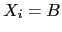
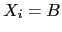
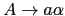
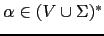
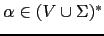
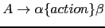
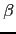

Sig: Esquemas de Traducción Sup: Análisis Descendente mediante Parsing Ant: Conceptos Básicos para el Con:
El árbol de análisis sintáctico abstracto es una representación compactada del árbol de análisis sintáctico concreto que contiene la misma información que éste.
Existen diferentes métodos de análisis sintáctico. La mayoría caen en una de dos categorías: ascendentes y descendentes. Los ascendentes construyen el árbol desde las hojas hacia la raíz. Los descendentes lo hacen en modo inverso. El que describiremos aqui es uno de los mas sencillos: se denomina método de análisis predictivo descendente recursivo.
A) reconocerá el lenguaje generado desde la variable
En este método se escribe una rutina A por variable sintáctica  .
Se le da a la rutina asociada el mismo nombre que a la variable sintáctica
asociada.
.
Se le da a la rutina asociada el mismo nombre que a la variable sintáctica
asociada.
La función de la rutina A asociada con la variable
 es reconocer el lenguaje
es reconocer el lenguaje  generado por
generado por  .
.
La estrategia general que sigue la rutina A para reconocer
 es decidir en términos del terminal
es decidir en términos del terminal  en la entrada
que regla de producción concreta
en la entrada
que regla de producción concreta
 se aplica para
a continuación comprobar que la entrada que sigue pertenece al lenguaje generado por
se aplica para
a continuación comprobar que la entrada que sigue pertenece al lenguaje generado por
 .
.
En un analizador predictivo descendente recursivo (APDR) se asume que
el símbolo que actualmente
esta siendo observado (denotado habitualmente como
lookahead) permite determinar unívocamente
que producción de  hay que aplicar.
hay que aplicar.
Una vez que se ha determinado que la regla por la que continuar la derivación
es
 se procede a reconocer
se procede a reconocer
 ,
el lenguaje generado por
,
el lenguaje generado por  . Si
. Si
 ,
las apariciones de terminales
,
las apariciones de terminales  en
en  son emparejadas
con los terminales en la entrada mientras que las apariciones de variables 
en
son emparejadas
con los terminales en la entrada mientras que las apariciones de variables 
en  se traducen en llamadas a la correspondiente subrutina asociada con
se traducen en llamadas a la correspondiente subrutina asociada con B.
Para ilustrar el método, simplificaremos la gramática presentada en el ejercicio 4.1.1 eliminando las declaraciones:
| statements
|
|
| statement
|
|
| expression
|
|
| term
|
|
| factor
|
La secuencia de llamadas cuando se procesa la entrada mediante el siguiente programa construye implícitamente el árbol de análisis sintáctico concreto.
var parse = function(input) {
var tokens = input.tokens();
var lookahead = tokens.shift();
var match = function(t) {
if (lookahead.type === t) {
lookahead = tokens.shift();
if (typeof lookahead === 'undefined') {
lookahead = null; // end of input
}
} else { // Error. Throw exception
throw "Syntax Error. Expected "+t+" found '"+lookahead.value+
"' near '"+input.substr(lookahead.from)+"'";
}
};
var statements = function() {
var result = [ statement() ];
while (lookahead && lookahead.type === ';') {
match(';');
result.push(statement());
}
return result.length === 1? result[0] : result;
};
var statement = function() {
var result = null;
if (lookahead && lookahead.type === 'ID') {
var left = { type: 'ID', value: lookahead.value };
match('ID');
match('=');
right = expression();
result = { type: '=', left: left, right: right };
} else if (lookahead && lookahead.type === 'P') {
match('P');
right = expression();
result = { type: 'P', value: right };
} else { // Error!
throw "Syntax Error. Expected identifier but found "+
(lookahead? lookahead.value : "end of input")+
" near '"+input.substr(lookahead.from)+"'";
}
return result;
};
var expression = function() {
var result = term();
if (lookahead && lookahead.type === '+') {
match('+');
var right = expression();
result = {type: '+', left: result, right: right};
}
return result;
};
var term = function() {
var result = factor();
if (lookahead && lookahead.type === '*') {
match('*');
var right = term();
result = {type: '*', left: result, right: right};
}
return result;
};
var factor = function() {
var result = null;
if (lookahead.type === 'NUM') {
result = {type: 'NUM', value: lookahead.value};
match('NUM');
}
else if (lookahead.type === 'ID') {
result = {type: 'ID', value: lookahead.value};
match('ID');
}
else if (lookahead.type === '(') {
match('(');
result = expression();
match(')');
} else { // Throw exception
throw "Syntax Error. Expected number or identifier or '(' but found "+
(lookahead? lookahead.value : "end of input")+
" near '"+input.substr(lookahead.from)+"'";
}
return result;
};
var tree = statements(input);
if (lookahead != null) {
throw "Syntax Error parsing statements. Expected end of input and found '"+
input.substr(lookahead.from)+"'";
}
return tree;
}
Como vemos en el ejemplo, el análisis predictivo confía en que, si estamos
ejecutando la entrada del procedimiento A,
el cuál está asociado con la variable
, el símbolo terminal
que esta en la entrada
 determine de manera unívoca la regla
de producción
 que debe ser procesada.
determine de manera unívoca la regla
de producción
 que debe ser procesada.
Si se piensa, esta condición requiere que todas las partes derechas
 de
las reglas
de
las reglas
 de
de
 comiencen por diferentes símbolos.
Para formalizar esta idea, introduciremos el concepto de
conjunto
comiencen por diferentes símbolos.
Para formalizar esta idea, introduciremos el concepto de
conjunto
 :
:

donde:

Podemos reformular ahora nuestra afirmación anterior en estos términos:
Si
 y los conjuntos
y los conjuntos
 son
disjuntos podemos construir el procedimiento para la variable
son
disjuntos podemos construir el procedimiento para la variable
 siguiendo
este seudocódigo:
siguiendo
este seudocódigo:
A = function() {
if (lookahead in FIRST(gamma_1)) { imitar gamma_1 }
elsif (lookahead in FIRST(gamma_2)) { imitar gamma_2 }
...
else (lookahead in FIRST(gamma_n)) { imitar gamma_n }
}
Donde si
 es
 el código
el código gamma_j consiste
en una secuencia
 de llamadas de uno de estos dos tipos:
X_i si match(X_i) si